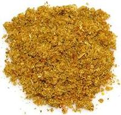

 |
Sambar Podi #1India - South - Sambar Podi | ||||
| Makes: Effort: Sched: DoAhead: |
2/3 cup *** hrs Yes |
Sambars are usually the first course in a southern Indian meal. Every cook has their favorite Sambar Podi. This simple one is based on recipes from Tamil Nadu. See also our Sambar Podi #2. | |||
|
----- 1 1/2 1/4 2 ----- 1 1 1/2 |
--- T c t --- oz T T |
-- Dry Roasted Cumin seeds Coriander seeds Fenugreek seeds Toor Dal (1) ------------- Red Chili, dry (2) Pepper, black Turmeric |
Make - (20 min)
|